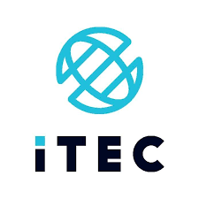
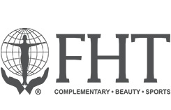

We are University trained and qualified professional Sports and Remedial massage therapists certified by ITEC.
We are members of the Federation of Holistic Therapists, fully insured and complying with the rules and standards of the association and best practice.
